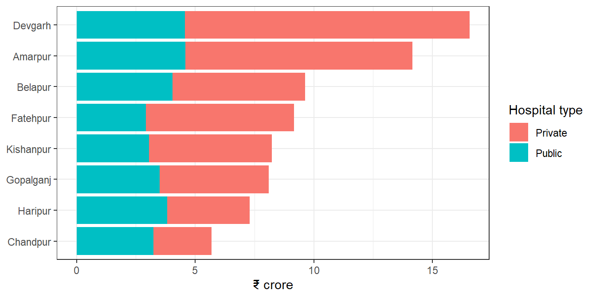
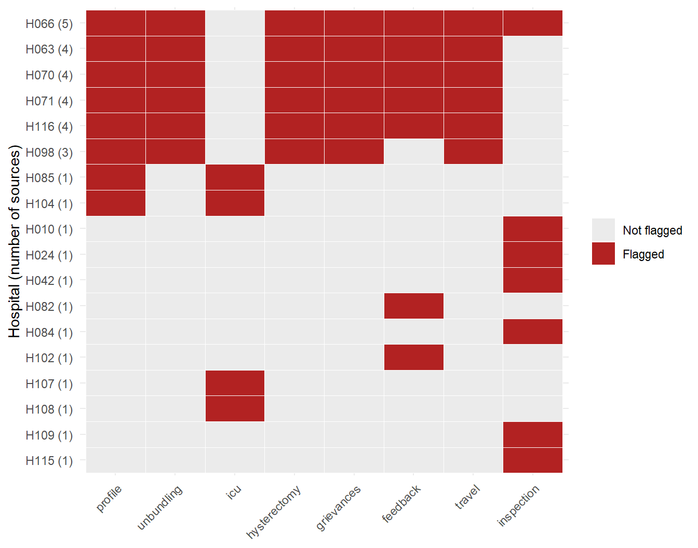

64 Auditing a Health Insurance Scheme
A State runs a health insurance scheme for poor families. Each family gets a card. With the card, a member can be treated free at any empanelled hospital, public or private. The hospital then raises a claim on the scheme, at a fixed rate for each treatment package. Thousands of claims are paid every month, mostly without anyone from the scheme seeing the patient. An audit team is asked a simple question. Is the money going to genuine treatment of the people the scheme was meant for?
The book has followed one such imaginary scheme, the Sarvajan Swasthya Yojana (SSY), through many chapters. Principal components and clustering found hospitals with unusual claims. Association rules found packages billed together in odd ways. Text analytics read the grievances, sentiment analysis read the feedback, and maps measured how far patients travelled and where inspection photos were taken. Each chapter found a piece. In a real audit, the pieces come together in one report.
This chapter carries out that audit from start to end, on the same data files. We first check the data received and draw a profile of the scheme. Then we gather seven lines of evidence, each in a few lines of code, with a link to the chapter that teaches the method. We put the evidence side by side, to see which hospitals are pointed at by several independent sources. We value the findings, write a draft audit observation, and end with what the analysis could not test.
This chapter uses arules, sf, tidytext and tidyverse. If any of them is missing, install them with the command below. Section C.2 lists the packages of every part.
install.packages(c("arules", "sf", "tidytext", "tidyverse"))64.1 The audit and its objectives
The audit is a performance and compliance audit of the hospital claims paid under the scheme in 2024-25. It asks four questions.
- Are the claims genuine and correctly priced? Each claim should be for a treatment that was given, billed at the package rate, without extra items that the package already includes.
- Are the patients really treated? A claim should stand for a real patient who needed admission, not a person brought in only to raise a claim.
- Is the quality of care acceptable? Patients should not be operated on without need, asked to pay, or sent home too early.
- Is the scheme monitored? Hospitals should be inspected, and grievances should be looked into.
No single test answers these questions. So we gather several lines of evidence from different sources, and see where they agree. Table 64.1 shows the plan.
| Line of evidence | Source | Method | Taught in |
|---|---|---|---|
| Unusual hospital profiles | Claims | Indicators, principal components, clustering | Section 46.10, Section 47.10 |
| Unbundled add-ons and intensive care | Claims | Association rules, shares by hospital | Section 48.2 |
| Hysterectomy in young women | Claims | Shares by hospital | This chapter |
| Themes of grievances | Grievances | Keyword dictionary | Chapter 51 |
| Patient feedback | Feedback | Sentiment scores | Chapter 52 |
| Distance patients travelled | Patient homes | Distances on a map | Section 56.9 |
| Inspections not done at the site | Inspection photos | Geotags | Section 56.10 |
We load the packages first. arules has functions with the same names as some dplyr functions, as Chapter 48 explains. So we do not attach it, and call its three functions with the prefix arules::.
64.2 Our data, the files received from the scheme
The scheme’s IT cell gave the audit team eight tables and one map file. They are the files used in the earlier chapters, described in Section B.2. We do not create any new data in this chapter. Let us read them all.
hospitals <- read_csv("Data/ssy_hospitals.csv", show_col_types = FALSE)
packages <- read_csv("Data/ssy_packages.csv", show_col_types = FALSE)
claims <- read_csv("Data/ssy_claims.csv", show_col_types = FALSE)
grievances <- read_csv("Data/ssy_grievances.csv", show_col_types = FALSE)
feedback <- read_csv("Data/ssy_feedback.csv", show_col_types = FALSE)
locations <- read_csv("Data/ssy_hospital_locations.csv", show_col_types = FALSE)
homes <- read_csv("Data/ssy_patient_homes.csv", show_col_types = FALSE)
inspections <- read_csv("Data/ssy_inspections.csv", show_col_types = FALSE)
districts <- st_read("Data/ssy_map.gpkg", layer = "districts", quiet = TRUE)
received <- list(hospitals = hospitals, packages = packages, claims = claims,
grievances = grievances, feedback = feedback, locations = locations,
homes = homes, inspections = inspections)
tibble(table = names(received),
rows = map_int(received, nrow),
columns = map_int(received, ncol))# A tibble: 8 × 3
table rows columns
<chr> <int> <int>
1 hospitals 120 5
2 packages 21 7
3 claims 33476 9
4 grievances 800 6
5 feedback 1500 4
6 locations 120 3
7 homes 4000 4
8 inspections 240 6map_int() applies nrow() and ncol() to each table in the list, and returns whole numbers. Table 64.2 shows what each table holds and how the tables link.
| Table | One row per | Links to other tables through |
|---|---|---|
hospitals |
Empanelled hospital | hospital_id |
packages |
Treatment package, with its rate |
package_code, which appears inside packages of each claim |
claims |
Claim paid in 2024-25 |
claim_id, hospital_id, patient_id
|
grievances |
Grievance against a hospital | hospital_id |
feedback |
Comment and star rating of a patient | hospital_id |
locations |
Location of a hospital, in km on a flat grid | hospital_id |
homes |
Home of the patient, for a sample of claims |
claim_id, hospital_id
|
inspections |
Inspection of a hospital, with the geotag of its photo | hospital_id |
So hospital_id is the thread that ties every source to a hospital. The claims are the only table with money in them. The other tables tell us what patients, inspectors and the map say about the same hospitals.
Plan the data request for a scheme audit early, and in writing. Ask for the claims with every field the system holds, not a summary. Ask for the masters of hospitals and packages, with the dates of any change in rates. Ask also for the pre-authorisation and rejection records, grievances with their disposal, inspection reports with photos and geotags, and the scheme’s own fraud alerts. Ask for the record counts and the total amount paid, so that you can check what you receive. Name the period, the format and the keys. A precise request saves weeks of back and forth, as Chapter 10 discusses.
64.2.1 Is the data complete and consistent?
Before any analysis, we test the data, as we tested a ledger in Section 59.4 and the files read in Section 10.5. If the claims are incomplete or do not agree with the masters, every later finding is in doubt.
rate <- setNames(packages$rate, packages$package_code)
codes_billed <- str_split(claims$packages, ";")
# For each claim, did the same patient have an open stay at the same hospital?
claims <- claims |>
arrange(hospital_id, patient_id, admission_date) |>
mutate(overlap = !is.na(lag(discharge_date)) & admission_date < lag(discharge_date),
.by = c(hospital_id, patient_id)) |>
arrange(claim_id)
checks <- tibble(
check = c("Claim numbers repeated",
"Claims of a hospital not in the hospital master",
"Package codes not in the package master",
"Claim amount differs from the sum of package rates",
"Discharge before admission",
"Blank cells in the claims",
"Male patients billed for a gynaecology or obstetrics package",
"Patient numbers with more than one gender",
"Same patient admitted again before the earlier discharge",
"Grievances, feedback or inspections of an unknown hospital",
"Patient homes for a claim not in the claims"),
problems = c(
sum(duplicated(claims$claim_id)),
sum(!claims$hospital_id %in% hospitals$hospital_id),
sum(!unlist(codes_billed) %in% packages$package_code),
sum(map_dbl(codes_billed, \(p) sum(rate[p])) != claims$claim_amount),
sum(claims$discharge_date < claims$admission_date),
sum(is.na(claims)),
sum(claims$gender == "M" & str_detect(claims$packages, "^G0")),
claims |> summarise(g = n_distinct(gender), .by = patient_id) |> filter(g > 1) |> nrow(),
sum(claims$overlap),
sum(!c(grievances$hospital_id, feedback$hospital_id, inspections$hospital_id) %in%
hospitals$hospital_id),
sum(!homes$claim_id %in% claims$claim_id)))
checks# A tibble: 11 × 2
check problems
<chr> <int>
1 Claim numbers repeated 0
2 Claims of a hospital not in the hospital master 0
3 Package codes not in the package master 0
4 Claim amount differs from the sum of package rates 0
5 Discharge before admission 0
6 Blank cells in the claims 0
7 Male patients billed for a gynaecology or obstetrics package 111
8 Patient numbers with more than one gender 0
9 Same patient admitted again before the earlier discharge 804
10 Grievances, feedback or inspections of an unknown hospital 0
11 Patient homes for a claim not in the claims 0The codes all exist, and the claim amounts are exactly the sum of the package rates. So the scheme’s pricing worked. But two checks fail. Let us look at them before going on.
- Men billed for women’s packages. 111 claims bill a male patient for a hysterectomy, a caesarean or a normal delivery. All 111 of them are on a patient number that appears on another claim too. So either the sex was entered wrongly, or one person’s card was used for another person.
- Two stays at once. 804 claims, 2.4% of all, admit a patient to a hospital while the same patient’s earlier stay at that hospital had not yet ended. A patient cannot lie in two beds of one hospital at the same time. These may be duplicate claims, or one card used for two people.
Neither problem is large enough to stop the analysis. But both go into the list of queries for the scheme, with the claim numbers. They also matter later. The readmission indicator of Chapter 46 counts a claim as a readmission if it starts within 30 days of the earlier discharge, and so it includes these overlapping stays. They happen in every kind of hospital, but more often in the six hospitals we will meet shortly, 4.4% of their claims against 2.2% elsewhere.
Let us also check that every month of the year is present, and that the dates fall in the year.
claims |>
summarise(first_admission = min(admission_date),
last_admission = max(admission_date),
last_discharge = max(discharge_date),
months = n_distinct(floor_date(admission_date, "month")))# A tibble: 1 × 4
first_admission last_admission last_discharge months
<date> <date> <date> <int>
1 2024-04-01 2025-03-31 2025-04-09 12All twelve months are present. Admissions run through 2024-25, and a few patients admitted in March were discharged in April, which is normal. The total paid is ₹78.84 crore on 33,476 claims. In a real audit, this total is reconciled with the payments in the scheme’s accounts before going further, as in Chapter 60. A difference would mean claims missing from the extract.
Two limits of the data should be noted at the start. The patient homes are given for a sample of 4,000 claims, not all of them. And the feedback has no date, so it cannot be tied to a particular stay.
These files hold personal data of patients. Patient numbers, age, sex, diagnosis and home location are sensitive, and the grievances carry mobile numbers. Keep the data on the office’s secure systems, mask mobile numbers before printing any text, and use patient numbers rather than names in working papers. Never upload such data to an online tool. Chapter 9 explains masking and keyed hashing, which let two lists be matched without exposing identities.
64.3 A profile of the scheme
Before looking for problems, we should know what normal looks like. Let us start with the hospitals and their claims.
claims_h <- claims |>
left_join(hospitals, by = "hospital_id")
claims_h |>
summarise(hospitals = n_distinct(hospital_id),
beds = sum(beds[!duplicated(hospital_id)]),
claims = n(),
crore = round(sum(claim_amount) / 1e7, 2),
average_claim = round(mean(claim_amount)),
.by = type)# A tibble: 2 × 6
type hospitals beds claims crore average_claim
<chr> <int> <dbl> <int> <dbl> <dbl>
1 Public 48 5558 17106 29.7 17387
2 Private 72 4041 16370 49.1 29993The scheme has 120 empanelled hospitals. 48 are public, a district hospital and five community health centres in each of the eight districts. 72 are private. Private hospitals raised 49% of the claims but took 62% of the money, because their average claim, ₹29,993, is higher than that of public hospitals, ₹17,387. This is expected, since private hospitals do more surgery.
How is the money spread across districts? Figure 64.1 shows it.

Devgarh has the largest share, ₹16.57 crore. It also has 15 private hospitals, among the most of any district. So far nothing is odd. A district with more private hospitals will usually have more claims.
Which packages take the money? The first code in packages is the main package.
pkg_profile <- claims |>
mutate(package_code = str_extract(packages, "^[A-Z][0-9]+")) |>
summarise(claims = n(), crore = sum(claim_amount) / 1e7, .by = package_code) |>
left_join(packages |> select(package_code, package_name), by = "package_code") |>
mutate(share_of_amount = round(100 * crore / sum(crore), 1),
crore = round(crore, 2)) |>
arrange(desc(crore))
head(pkg_profile, 6)# A tibble: 6 × 5
package_code claims crore package_name share_of_amount
<chr> <int> <dbl> <chr> <dbl>
1 C01 1010 13.5 Coronary angioplasty 17.1
2 R01 1099 10.3 Total knee replacement 13.1
3 S03 1780 6.5 Laparoscopic cholecystectomy 8.2
4 S01 2266 6.16 Appendectomy 7.8
5 G01 1745 5.43 Hysterectomy 6.9
6 R02 1634 5.3 Fracture fixation 6.7Knee replacement and angioplasty are few in number, but costly. Together the top six packages take 60% of the money. This tells us where an error per claim costs the most. With this picture of normal, we turn to the evidence.
64.4 Line of evidence 1, hospitals with unusual profiles
In Chapter 46 we built eleven indicators for each hospital from its claims. They include claims per bed, length of stay, share of surgery, share of ICU stays, weekend admissions and readmissions. We then ranked hospitals by their distance from the centre of the principal components. We repeat the same steps here. The code is the same as in Chapter 46, and is folded.
Code to build the hospital indicators (same as in the PCA chapter)
claims_plus <- claims |>
mutate(main_package = str_extract(packages, "^[A-Z][0-9]+"),
los = as.numeric(discharge_date - admission_date),
n_addons = str_count(packages, ";")) |>
left_join(packages |> select(main_package = package_code, surgical, day_care),
by = "main_package") |>
arrange(hospital_id, patient_id, admission_date) |>
mutate(readmit = !is.na(lag(discharge_date)) &
admission_date - lag(discharge_date) <= 30,
.by = c(hospital_id, patient_id))
indicators <- claims_plus |>
summarise(n_claims = n(),
amount = sum(claim_amount),
avg_claim = mean(claim_amount) / 1000,
avg_los = mean(los),
pct_surgical = 100 * mean(surgical),
pct_icu = 100 * mean(str_detect(packages, "A01")),
pct_short_stay = 100 * mean(los <= 1 & !day_care),
pct_weekend = 100 * mean(wday(admission_date, week_start = 1) >= 6),
pct_readmit = 100 * mean(readmit),
pct_female = 100 * mean(gender == "F"),
pct_senior = 100 * mean(age >= 60),
addons_per_claim = mean(n_addons),
.by = hospital_id) |>
left_join(hospitals, by = "hospital_id") |>
mutate(claims_per_bed = n_claims / beds)
X <- indicators |>
select(claims_per_bed, avg_claim, avg_los, pct_surgical, pct_icu,
pct_short_stay, pct_weekend, pct_readmit, pct_female,
pct_senior, addons_per_claim)Now the principal components, and the distance of each hospital from the centre, using the first three components as in Section 46.10.
hosp_pca <- prcomp(X, scale. = TRUE)
pca_scores <- indicators |>
select(hospital_id, hospital_name, district) |>
bind_cols(as_tibble(hosp_pca$x[, 1:3])) |>
mutate(distance = sqrt(PC1^2 + PC2^2 + PC3^2)) |>
arrange(desc(distance))
head(pca_scores, 10) |>
mutate(across(where(is.double), \(x) round(x, 1)))# A tibble: 10 × 7
hospital_id hospital_name district PC1 PC2 PC3 distance
<chr> <chr> <chr> <dbl> <dbl> <dbl> <dbl>
1 H116 Arpan Hospital Gopalganj 8.3 4.9 -0.6 9.6
2 H070 Prerna Hospital Devgarh 8 4 -0.4 9
3 H066 Suraksha Nursing Home Devgarh 7.9 4.1 0 8.9
4 H071 Ganga Nursing Home Belapur 7.9 4 -0.1 8.9
5 H063 Kamdhenu Nursing Home Kishanpur 7.7 4.2 -0.9 8.8
6 H098 Madhuban Medical Centre Haripur 7.8 3.4 0.4 8.5
7 H085 Pragati Nursing Home Devgarh 2.3 -3 -2.7 4.6
8 H104 Navjeevan Hospital Chandpur 1.9 -3 -2.9 4.6
9 H038 CHC Gopalganj-5 Gopalganj -3 2.5 -1.7 4.3
10 H026 CHC Devgarh-3 Devgarh -2.5 2.6 -1 3.8The PCA chapter took the top eight as its leads. Let us do the same, and also run the k-means clustering of Section 47.10 with the same settings, to see the small cluster it found.
[1] "H063" "H066" "H070" "H071" "H098" "H116"The results agree with the earlier chapters. The smallest cluster holds the same six private hospitals, H063, H066, H070, H071, H098, H116. These are the “camp” hospitals. They raise 7.4 to 8.5 claims per bed in the year, against a median of 3.6 for other private hospitals. Between 29% and 37% of their admissions are on a Saturday or Sunday, against a median of 20%. And 9% to 12% of their claims are readmissions within 30 days, against 3.1%.
The other two of the top eight are Pragati Nursing Home (H085) and Navjeevan Hospital (H104). They are not unusual on volume. They bill an ICU stay in 29% and 28% of their claims, against a median of 12% for other private hospitals. Section 47.11 found the same two as the odd ones out among their peers.
So the first line of evidence gives eight leads, H063, H066, H070, H071, H085, H098, H104, H116. We keep them in flag_profile, and the six camp hospitals in six, for use later.
64.5 Line of evidence 2, packages billed together
64.5.1 Add-ons that the package already includes
Section 48.2 treated each claim as a basket of packages and used association rules to find packages billed together. Let us repeat it in three lines, and keep only the rules with an add-on on the left.
trans <- arules::transactions(str_split(claims$packages, ";"))
claim_rules <- arules::apriori(trans,
parameter = list(supp = 0.002, conf = 0.2, minlen = 2),
control = list(verbose = FALSE))
arules::DATAFRAME(claim_rules) |>
as_tibble() |>
filter(LHS %in% c("{A05}", "{A06}")) |>
mutate(across(where(is.numeric), \(x) round(x, 3)))# A tibble: 3 × 7
LHS RHS support confidence coverage lift count
<fct> <fct> <dbl> <dbl> <dbl> <dbl> <dbl>
1 {A05} {S01} 0.007 1 0.007 14.8 229
2 {A05} {A04} 0.002 0.297 0.007 3.57 68
3 {A06} {O01} 0.017 1 0.017 11.6 562The two rules with a confidence of 1 are the ones the auditor reads closely. The add-on A06, an intraocular lens, is never billed without O01, Cataract surgery with lens. The lens is already in the name, and so in the rate, of the cataract package. Billing it again is unbundling. The add-on A05, a diagnostic laparoscopy, is never billed without S01, an appendectomy, where it is seldom needed. Which hospitals bill them?
unbundled <- claims |>
filter(str_detect(packages, "A05|A06")) |>
summarise(lens_A06 = sum(str_detect(packages, "A06")),
laparoscopy_A05 = sum(str_detect(packages, "A05")),
.by = hospital_id) |>
arrange(desc(lens_A06))
unbundled# A tibble: 6 × 3
hospital_id lens_A06 laparoscopy_A05
<chr> <int> <int>
1 H070 176 62
2 H066 132 44
3 H063 127 55
4 H098 65 31
5 H116 34 23
6 H071 28 14flag_unbundle <- unbundled$hospital_idOnly the six camp hospitals bill either add-on. No other hospital ever does. This matches Section 48.2.
64.5.2 Intensive care after simple medical treatment
An ICU stay is normal after an angioplasty, and common after diabetic ketoacidosis. It is rare after a fever or a stomach infection. Chapter 48 asked, in its exercises, which hospitals bill an ICU stay after simple illnesses. Let us take all five medical packages, M01 to M05, and find each hospital’s share of such claims with an ICU stay.
medical <- claims_plus |>
filter(str_detect(main_package, "^M"))
overall_icu <- mean(str_detect(medical$packages, "A01"))
icu_medical <- medical |>
summarise(claims = n(),
with_icu = sum(str_detect(packages, "A01")),
.by = hospital_id) |>
mutate(share = with_icu / claims) |>
arrange(desc(share))
head(icu_medical, 6) |>
mutate(share = round(share, 2))# A tibble: 6 × 4
hospital_id claims with_icu share
<chr> <int> <int> <dbl>
1 H085 120 74 0.62
2 H104 43 25 0.58
3 H107 31 8 0.26
4 H108 30 7 0.23
5 H090 22 5 0.23
6 H050 54 11 0.2 Across all hospitals, 11.6% of medical claims carry an ICU stay. We set our rule in advance. A hospital is flagged if its share is more than twice this, on at least 20 medical claims.
[1] "H085" "H104" "H107" "H108"H085 and H104 stand far above the rest, with 62% and 58%. The rule also flags H107 and H108, with 26% and 23% on about 30 claims each. These are only just over the line, and a handful of claims more or less would move them below it. We keep them, because the rule was fixed in advance, and see later whether any other source supports them.
64.6 Line of evidence 3, hysterectomy in young women
The grievances in Chapter 51 included complaints from young women whose uterus had been removed for a small stomach pain. No earlier chapter tested this in the claims. Removal of the uterus in a young woman is a major decision. It is usually done for clear medical reasons, mostly in older women. Under insurance schemes it is a known area of misuse, so many schemes require extra checks before approving it in younger women. Let us look at the age of the women billed for hysterectomy, package G01.
# A tibble: 8 × 5
hospital_id claims under_40 median_age share_under_40
<chr> <int> <int> <dbl> <dbl>
1 H098 52 41 33 0.79
2 H071 21 16 36 0.76
3 H070 142 107 34 0.75
4 H063 113 77 33 0.68
5 H066 113 73 35 0.65
6 H116 34 19 37 0.56
7 H019 9 2 43 0.22
8 H037 5 1 46 0.2 The pattern is sharp. In the six camp hospitals, 56% to 79% of hysterectomies are on women under 40, and the median age is 33 to 37. In the other 114 hospitals that bill this package, the median age is 50, and 16 of 1,270 hysterectomies are on women under 40. We flag a hospital if more than half of at least ten hysterectomies are on women under 40.
[1] "H098" "H071" "H070" "H063" "H066" "H116"This is a new line of evidence, not tested in the earlier chapters. It came from reading the grievances and then asking the claims the same question. Text pointed to a theme, and the numbers measured it.
64.7 Line of evidence 4, what the grievances say
Chapter 51 built a keyword dictionary of themes and found that the category Other hid complaints about camps, agents and surgery. We reuse two of its patterns. First we mask mobile numbers, as that chapter did.
grievances <- grievances |>
mutate(text = str_replace_all(text, "\\b[6-9][0-9]{9}\\b", "[PHONE]"),
clean_text = str_squish(str_to_lower(text)))
serious <- grievances |>
mutate(camp_or_agent = str_detect(clean_text, "camp|vehicle|van |agent|village"),
surgery = str_detect(clean_text,
"uterus|without any test|second operation|wound|in a hurry|operation kar")) |>
summarise(grievances = n(),
serious = sum(camp_or_agent | surgery),
.by = hospital_id) |>
arrange(desc(serious))
head(serious, 8)# A tibble: 8 × 3
hospital_id grievances serious
<chr> <int> <int>
1 H071 41 25
2 H116 35 24
3 H063 42 23
4 H070 37 21
5 H098 32 18
6 H066 33 16
7 H073 10 2
8 H064 8 2The six camp hospitals have 220 of the 800 grievances, and 127 of the 162 about camps, agents or surgery. No other hospital has more than 2 such grievances. We flag a hospital with five or more.
[1] "H071" "H116" "H063" "H070" "H098" "H066"This agrees with Chapter 51 and with the comparison cloud of Section 53.6. Let us read three of the grievances behind the numbers, because an auditor must always read the text.
grievances |>
filter(hospital_id %in% six, str_detect(clean_text, "camp|uterus")) |>
slice(1:3) |>
pull(text)[1] "Camp ke baad hospital le gaye, operation kar diya. Nobody explained anything to us."
[2] "Dear Sir/Madam, My uterus was removed at age 27, I had only small stomach pain . Now I feel weak all the time ."
[3] "sir ji, hospitl people came to village camp and said everyone must get checked, then my mother was admitted and operated. please look into the matter urgently."64.8 Line of evidence 5, what patients say in feedback
Chapter 52 scored each comment with the Bing dictionary. It turned the sign of a word after not or no, and added a few words of the health sector, such as pay and forced. We repeat its scoring compactly.
negations <- c("not", "no", "never", "without")
my_dictionary <- bind_rows(
get_sentiments("bing"),
tibble(word = c("caring", "recovered", "experienced", "explained",
"forced", "pay", "wait", "nobody"),
sentiment = rep(c("positive", "negative"), each = 4)))
comment_scores <- feedback |>
unnest_tokens(word, comment) |>
mutate(previous = lag(word), .by = feedback_id) |>
inner_join(my_dictionary, by = "word") |>
mutate(value = if_else(sentiment == "positive", 1, -1),
value = if_else(previous %in% negations, -value, value)) |>
summarise(score = sum(value), .by = feedback_id)
feedback_scored <- feedback |>
left_join(comment_scores, by = "feedback_id") |>
mutate(score = replace_na(score, 0))
cor(feedback_scored$score, feedback_scored$rating)[1] 0.8184673The score agrees with the star ratings, with a correlation of 0.82, the same as in Chapter 52. Now the hospitals.
# A tibble: 8 × 5
hospital_id comments avg_score pct_negative avg_rating
<chr> <int> <dbl> <dbl> <dbl>
1 H071 16 -1.81 94 2.1
2 H070 11 -1.36 82 2.1
3 H066 12 -0.92 67 2.4
4 H063 16 -0.88 62 2.7
5 H116 10 -0.5 50 2.4
6 H102 10 -0.5 50 2.7
7 H082 9 -0.44 56 2.8
8 H107 9 -0.33 56 2.6Each hospital has only 2 to 23 comments, so one or two unhappy patients can move its average. Chapter 52 warned about this. We flag a hospital whose average score is below -0.4, if it has at least eight comments.
[1] "H071" "H070" "H066" "H063" "H116" "H102" "H082"Of the six camp hospitals, five are flagged. H098 is not, with an average score of 0.09 on 11 comments. The rule also flags H102 and H082, which are not flagged by any claims test. Feedback is the noisiest of our sources.
64.8.1 Is any feedback too good to be true?
Section 52.11 found two ration shops whose feedback was written by the shop staff. It was copied, sentence for sentence, and nearly always five stars. A hospital could do the same to hide its problems. Let us check.
# A tibble: 5 × 4
hospital_id comments pct_five_star pct_copied
<chr> <int> <dbl> <dbl>
1 H118 10 60 10
2 H021 13 54 0
3 H016 15 53 0
4 H045 12 50 8
5 H040 10 50 0too_good |> filter(pct_copied > 25, pct_five_star > 50)# A tibble: 0 × 4
# ℹ 4 variables: hospital_id <chr>, comments <int>, pct_five_star <dbl>,
# pct_copied <dbl>The highest share of five-star ratings is 60%. Copied comments are common everywhere, up to 31% in some hospitals, because patients write short and similar sentences. So copies alone mean little. The exercises of Chapter 52 suggested a rule that needs both, more than 25% copies and more than half the ratings at five stars. No hospital meets it. Nothing here looks like the shops of Section 52.11. This is worth saying in the working papers. A test that finds nothing is still evidence, as long as it was done properly.
64.9 Line of evidence 6, how far patients travelled
Most patients go to a hospital near home. Section 56.9 measured, for a sample of claims, the distance from the patient’s home to the hospital. We do the same with sf. The coordinates are in kilometres on the map’s own grid, so we use the map’s coordinate system.
hosp_sf <- locations |>
st_as_sf(coords = c("x_km", "y_km"), crs = st_crs(districts))
homes_sf <- homes |>
st_as_sf(coords = c("home_x_km", "home_y_km"), crs = st_crs(districts))
homes_sf <- homes_sf |>
mutate(distance_km = as.numeric(st_distance(
homes_sf, hosp_sf[match(homes_sf$hospital_id, hosp_sf$hospital_id), ],
by_element = TRUE)))
travel <- homes_sf |>
st_drop_geometry() |>
summarise(patients = n(),
median_km = round(median(distance_km), 1),
pct_over_50km = round(100 * mean(distance_km > 50)),
.by = hospital_id) |>
filter(patients >= 15) |>
arrange(desc(pct_over_50km))
head(travel, 8)# A tibble: 8 × 4
hospital_id patients median_km pct_over_50km
<chr> <int> <dbl> <dbl>
1 H116 21 88.1 71
2 H071 19 97 63
3 H066 59 81.8 59
4 H070 99 77 59
5 H063 69 92.6 58
6 H098 26 71.2 58
7 H095 15 5.8 7
8 H039 60 10.3 7Half of all sampled patients live within 9 km of their hospital. But in the six camp hospitals, 58% to 71% of patients came from more than 50 km away. In every other hospital with at least 15 sampled patients, at most 7% did. As in Section 56.9, we flag a hospital where more than half the patients came from beyond 50 km.
[1] "H116" "H071" "H066" "H070" "H063" "H098"Patients brought from far away, mostly at weekends, matches the grievances about vans and village camps. The two sources are independent. One is what patients wrote, the other is where they live.
64.10 Line of evidence 7, inspections not done at the site
Every hospital is to be inspected twice a year, with a geotagged photo. Section 56.10 measured how far each photo was taken from the hospital. Let us repeat it.
inspections_sf <- inspections |>
st_as_sf(coords = c("photo_x_km", "photo_y_km"), crs = st_crs(districts))
inspections_sf <- inspections_sf |>
mutate(distance_km = as.numeric(st_distance(
inspections_sf, hosp_sf[match(inspections_sf$hospital_id, hosp_sf$hospital_id), ],
by_element = TRUE)))
far_photos <- inspections_sf |>
st_drop_geometry() |>
filter(distance_km > 1) |>
arrange(desc(distance_km)) |>
mutate(distance_km = round(distance_km, 1))
far_photos# A tibble: 7 × 5
hospital_id inspection_no inspection_date inspector distance_km
<chr> <dbl> <date> <chr> <dbl>
1 H010 2 2024-06-11 INS-05 88.7
2 H042 2 2024-04-18 INS-04 87.6
3 H024 2 2025-03-14 INS-03 63.1
4 H109 2 2024-09-11 INS-03 51
5 H084 2 2024-08-08 INS-03 47.1
6 H115 2 2024-04-19 INS-02 32.3
7 H066 2 2024-06-15 INS-05 32.2flag_insp <- unique(far_photos$hospital_id)Half of all photos were taken within 104 metres of the hospital. But seven photos were taken 32 to 89 km away. These inspections were very likely reported without a visit. INS-03 accounts for three of them, as Section 56.10 also found. Only one of the seven hospitals, H066, is a camp hospital. The others have no other flag of any kind.
This line of evidence answers a different audit question. It is about the scheme’s monitoring, not about the hospitals’ claims. A desk inspection is a failure of the inspector, not a sign that the hospital did wrong.
64.11 Putting the evidence together
We now have eight lists of flagged hospitals, from five sources. Four lists come from the claims. The others come from grievances, feedback, patient homes and inspection photos. Let us put them in one table, with one row per hospital and one column per line of evidence.
The key idea is to count independent sources, not tests. Tests on the same claims are not independent. A hospital with many ICU stays will also have a high average claim, and so will stand out both in PCA and in the ICU test. That is one fact seen twice. A grievance, a patient’s home address and an inspector’s photo come from different people and different systems. When they agree, the agreement means much more.
signals <- hospitals |>
select(hospital_id, hospital_name, district) |>
mutate(profile = hospital_id %in% flag_profile,
unbundling = hospital_id %in% flag_unbundle,
icu = hospital_id %in% flag_icu,
hysterectomy = hospital_id %in% flag_hyst,
grievances = hospital_id %in% flag_griev,
feedback = hospital_id %in% flag_feedback,
travel = hospital_id %in% flag_travel,
inspection = hospital_id %in% flag_insp,
claims_data = profile | unbundling | icu | hysterectomy,
signals = profile + unbundling + icu + hysterectomy +
grievances + feedback + travel + inspection,
sources = claims_data + grievances + feedback + travel + inspection) |>
filter(signals > 0) |>
arrange(desc(sources), desc(signals))
signals |>
mutate(across(profile:inspection, \(x) if_else(x, "Yes", ""))) |>
select(-claims_data, -hospital_name, -district) |>
knitr::kable()| hospital_id | profile | unbundling | icu | hysterectomy | grievances | feedback | travel | inspection | signals | sources |
|---|---|---|---|---|---|---|---|---|---|---|
| H066 | Yes | Yes | Yes | Yes | Yes | Yes | Yes | 7 | 5 | |
| H063 | Yes | Yes | Yes | Yes | Yes | Yes | 6 | 4 | ||
| H070 | Yes | Yes | Yes | Yes | Yes | Yes | 6 | 4 | ||
| H071 | Yes | Yes | Yes | Yes | Yes | Yes | 6 | 4 | ||
| H116 | Yes | Yes | Yes | Yes | Yes | Yes | 6 | 4 | ||
| H098 | Yes | Yes | Yes | Yes | Yes | 5 | 3 | |||
| H085 | Yes | Yes | 2 | 1 | ||||||
| H104 | Yes | Yes | 2 | 1 | ||||||
| H010 | Yes | 1 | 1 | |||||||
| H024 | Yes | 1 | 1 | |||||||
| H042 | Yes | 1 | 1 | |||||||
| H082 | Yes | 1 | 1 | |||||||
| H084 | Yes | 1 | 1 | |||||||
| H102 | Yes | 1 | 1 | |||||||
| H107 | Yes | 1 | 1 | |||||||
| H108 | Yes | 1 | 1 | |||||||
| H109 | Yes | 1 | 1 | |||||||
| H115 | Yes | 1 | 1 |
Figure 64.2 draws the same table as a grid.
signals |>
mutate(hospital = fct_rev(fct_inorder(paste0(hospital_id, " (", sources, ")")))) |>
pivot_longer(profile:inspection, names_to = "evidence", values_to = "flagged") |>
mutate(evidence = fct_inorder(evidence)) |>
ggplot(aes(evidence, hospital, fill = flagged)) +
geom_tile(colour = "white") +
scale_fill_manual(values = c(`TRUE` = "firebrick", `FALSE` = "grey92"),
labels = c(`TRUE` = "Flagged", `FALSE` = "Not flagged")) +
labs(x = NULL, y = "Hospital (number of sources)", fill = NULL) +
theme_minimal() +
theme(axis.text.x = element_text(angle = 45, hjust = 1))
The table sorts itself into four groups.
- Strong cases. Six hospitals are flagged by three or more independent sources, and they are exactly the six camp hospitals. H066, Suraksha Nursing Home, is flagged by five sources, the most of any hospital. Its claims, its grievances, its patients’ feedback, its patients’ homes and its inspection photo all point the same way.
- A case resting on one source. H085 and H104 are flagged by two tests each, but both tests read the same claims. No grievance, feedback or map supports them. This does not make them innocent. Overbilling of ICU stays is done on paper, so patients may never notice it, and would not complain. But the case rests on the claims alone, and needs the medical records to stand.
- False alarms, most likely. H107 and H108 are just over the line of the ICU rule, and H082 and H102 are flagged on about ten comments each. Nothing else supports them. With 120 hospitals and eight tests, a few such flags are bound to appear by chance.
- A monitoring failure. H010, H024, H042, H084, H109, H115 are flagged only for a desk inspection. This says nothing about these hospitals. It says the inspection system cannot be relied on.
Note one more point. The six camp hospitals and the two ICU hospitals were planted in the data by different processes, and the evidence tells them apart. That is what triangulation is for. One signal is a lead. Several independent signals make a strong case.
Triangulation makes a lead stronger. It does not make it proven. Every signal in the table is a pattern in data that the hospital has not yet been asked to explain. A hospital in a remote area may genuinely draw patients from far away. A surgeon with a good name may attract patients from other districts. Grievances can be filed by rivals. The audit observation must rest on records seen, patients met and explanations received, not on the table alone.
64.12 Valuing the findings
An observation needs a money value. But we must be careful to say what kind of value it is. Some amounts are wrong on the face of the claim. Others are only at risk until the records are seen. Let us work out four amounts, one for each specific pattern.
For the ICU stays, we cannot say that every ICU stay at H085 and H104 was unneeded. Instead we work out the expected number. For each medical package, we take the share of claims with an ICU stay at all other hospitals. Applied to the two hospitals’ own claims, this gives the number of ICU stays they would bill if they behaved like the rest. The excess is the number above this.
icu_rate <- medical |>
filter(!hospital_id %in% icu_two) |>
summarise(expected_rate = mean(str_detect(packages, "A01")), .by = main_package)
icu_excess <- medical |>
filter(hospital_id %in% icu_two) |>
left_join(icu_rate, by = "main_package") |>
summarise(claims = n(),
actual = sum(str_detect(packages, "A01")),
expected = round(sum(expected_rate), 1),
.by = hospital_id) |>
mutate(excess = round(actual - expected))
icu_excess# A tibble: 2 × 5
hospital_id claims actual expected excess
<chr> <int> <int> <dbl> <dbl>
1 H085 120 74 13.1 61
2 H104 43 25 4.5 20Now the four amounts together.
lens <- claims |> filter(hospital_id %in% six, str_detect(packages, "A06"))
lapar <- claims |> filter(hospital_id %in% six, str_detect(packages, "A05"))
young <- claims |> filter(hospital_id %in% six, str_detect(packages, "^G01"), age < 40)
value <- tibble(
item = c("Lens billed again with cataract surgery (A06)",
"Diagnostic laparoscopy with appendectomy (A05)",
"Hysterectomy in women under 40, whole claim",
"ICU stays after medical packages, above the expected number"),
hospitals = c("Six camp hospitals", "Six camp hospitals", "Six camp hospitals",
paste(icu_two, collapse = " and ")),
claims = c(nrow(lens), nrow(lapar), nrow(young), sum(icu_excess$excess)),
amount = c(nrow(lens) * rate[["A06"]], nrow(lapar) * rate[["A05"]],
sum(young$claim_amount), sum(icu_excess$excess) * rate[["A01"]]),
status = c("Inadmissible on the face of the claim", "At risk, needs case records",
"At risk, needs medical records", "At risk, needs medical records"))
value |>
mutate(lakh = round(amount / 1e5, 1)) |>
select(-amount) |>
knitr::kable()| item | hospitals | claims | status | lakh |
|---|---|---|---|---|
| Lens billed again with cataract surgery (A06) | Six camp hospitals | 562 | Inadmissible on the face of the claim | 22.5 |
| Diagnostic laparoscopy with appendectomy (A05) | Six camp hospitals | 229 | At risk, needs case records | 27.5 |
| Hysterectomy in women under 40, whole claim | Six camp hospitals | 333 | At risk, needs medical records | 103.0 |
| ICU stays after medical packages, above the expected number | H085 and H104 | 81 | At risk, needs medical records | 12.2 |
The four items come to ₹1.65 crore. They do not overlap, because each item is a different set of claims. But they are of different strength.
- The separate lens, ₹22.5 lakh on 562 claims, is inadmissible as soon as we read the package master. No medical judgement is needed. It can be recovered once the scheme confirms the package definition.
- The laparoscopies, ₹27.5 lakh, and the hysterectomies in young women, ₹1.03 crore, are amounts at risk. Some of these operations may have been needed. Only the case records, and a doctor’s opinion on them, can decide.
- The excess ICU stays, ₹12.2 lakh, rest on a comparison with other hospitals. They are an estimate, and should be reported as one.
Beyond these items, the whole of the claims of the flagged hospitals is exposed. The six camp hospitals were paid ₹6.41 crore in the year, 8.1% of the scheme’s claims. The two ICU hospitals were paid ₹1.77 crore. If field visits find that patients were not treated at all, much more than the four items above may be wrong. But we should not report the whole ₹6.41 crore as a loss. Most of those patients were probably treated. The audit report should give it as the value of claims under examination, not as an irregular payment.
Keep three kinds of figure apart in the report. An inadmissible amount breaks a clear rule and can be recovered. An amount at risk is open to question until the records are seen. Exposure is the total value of the transactions in which the problem lies. Mixing them up overstates the finding, and the auditee will rightly dispute it.
64.13 Audit use case, from signals to an audit observation
Let us take the strongest case, H066, and write a draft observation. First we pull its facts into one place.
h <- top_h
h_facts <- list(
indicators = indicators |> filter(hospital_id == h) |>
select(hospital_name, district, beds, n_claims, amount, claims_per_bed,
pct_weekend, pct_readmit),
unbundled = unbundled |> filter(hospital_id == h),
hysterectomy = hysterectomy |> filter(hospital_id == h),
grievances = serious |> filter(hospital_id == h),
feedback = hospital_mood |> filter(hospital_id == h),
travel = travel |> filter(hospital_id == h),
inspection = far_photos |> filter(hospital_id == h)
)
h_facts$indicators
# A tibble: 1 × 8
hospital_name district beds n_claims amount claims_per_bed pct_weekend
<chr> <chr> <dbl> <int> <dbl> <dbl> <dbl>
1 Suraksha Nursing Ho… Devgarh 73 575 1.49e7 7.88 35.7
# ℹ 1 more variable: pct_readmit <dbl>
$unbundled
# A tibble: 1 × 3
hospital_id lens_A06 laparoscopy_A05
<chr> <int> <int>
1 H066 132 44
$hysterectomy
# A tibble: 1 × 5
hospital_id claims under_40 median_age share_under_40
<chr> <int> <int> <dbl> <dbl>
1 H066 113 73 35 0.65
$grievances
# A tibble: 1 × 3
hospital_id grievances serious
<chr> <int> <int>
1 H066 33 16
$feedback
# A tibble: 1 × 5
hospital_id comments avg_score pct_negative avg_rating
<chr> <int> <dbl> <dbl> <dbl>
1 H066 12 -0.92 67 2.4
$travel
# A tibble: 1 × 4
hospital_id patients median_km pct_over_50km
<chr> <int> <dbl> <dbl>
1 H066 59 81.8 59
$inspection
# A tibble: 1 × 5
hospital_id inspection_no inspection_date inspector distance_km
<chr> <dbl> <date> <chr> <dbl>
1 H066 2 2024-06-15 INS-05 32.2A draft observation follows the usual order of facts, criteria, cause, effect and recommendation. Its wording must be careful. At this stage the audit has patterns in data, not proof of fraud. So the draft states what the data shows, and asks for the records. It does not say “fraud”, “fake” or “bogus”.
Unusual claims of Suraksha Nursing Home, Devgarh
Facts. Suraksha Nursing Home (H066), a private hospital with 73 beds in Devgarh district, was paid ₹1.49 crore on 575 claims in 2024-25. This is 7.9 claims per bed, against a median of 3.6 for other private hospitals. Of its admissions, 36% were on Saturdays or Sundays, and 11.7% of its claims were for a patient it had admitted in the previous 30 days. In 21 claims, the patient was admitted again before the earlier stay had ended. In 132 claims for cataract surgery with lens, a lens was billed again as a separate add-on, for ₹5.3 lakh. In 44 claims for appendectomy, a diagnostic laparoscopy was billed in addition, for ₹5.3 lakh. Of 113 hysterectomies, 73 were on women under 40 years, for ₹22.7 lakh. Of a sample of 59 patients, 59% lived more than 50 km from the hospital. The scheme received 33 grievances against the hospital, of which 16 described village camps, agents or surgery done without explanation. The photo of the inspection of 15 June 2024 was taken 32 km from the hospital.
Criteria. The package for cataract surgery includes the lens. Add-on packages are to be billed only when clinically needed and recorded. Hysterectomy is to be done only on documented medical grounds. Empanelled hospitals are to be inspected at the site twice a year.
Cause. Claims of this hospital with a separate lens were paid in 12 of the 12 months of the year. This suggests that the claim system had no check against an add-on that a package already includes. No check on the age of women for hysterectomy, or on claims per bed, was evident. The inspection report was accepted without checking the geotag of the photo.
Effect. ₹5.3 lakh was paid for lenses already covered by the package. ₹28.0 lakh on laparoscopies and hysterectomies is at risk until the case records are examined. The pattern of camps, distant patients and complaints raises doubt whether all patients needed admission.
Recommendation. The scheme may recover the separate lens charges, and have its medical auditors examine the case records of the flagged claims. It may verify a sample of patients at their homes, and refer the hospital to its anti-fraud unit for investigation. It may also add system checks on add-ons, hysterectomy in young women and claims per bed, and require geotag checks on every inspection.
format(x, "%d %B %Y") prints a date as day, month name and year. Notice what the draft does. It counts, compares with peers, and quotes rates. It names the rule broken only where a rule clearly exists. It separates the amount already inadmissible from the amount at risk. And it leaves the question of intent to the investigation that follows.
64.13.1 What the auditor does next
- Ask the scheme for the records. For a sample of the flagged claims, ask for the pre-authorisation, the case sheet and the operation notes. Ask also for the discharge summary and any photos uploaded by the hospital. Select the sample with Chapter 29, all claims with the separate lens and a random sample of the rest.
- Get a medical opinion. The audit team cannot judge whether a hysterectomy or an ICU stay was needed. A doctor from outside the hospital, through the scheme’s medical audit or a government hospital, must review the case records.
- Meet the patients. Visit a sample of patients at home, with the scheme’s district staff. Confirm that they were admitted, for how long, for what, whether they paid anything, and how they came to the hospital. Patient confirmation is the strongest evidence of all.
- Visit the hospital. Check the beds, the operation theatre register, the ICU register and the staff on duty against the claims of the same days. A joint physical verification with the scheme’s officers is best.
- Look for links. Check whether the six camp hospitals share owners, doctors, agents or vehicles, with the methods of Chapter 55.
- Refer, do not conclude. If the records and visits confirm the pattern, the scheme’s anti-fraud unit or the competent authority must investigate. The audit report states the facts found and the action taken.
64.14 Audit use case, a lead from one source
Pragati Nursing Home and Navjeevan Hospital are flagged only by their claims. Nobody complained about them. Their patients did not travel far, and their inspections were done at the site. Should the auditor drop them?
No. Some irregularities leave traces in only one place. Billing an ICU stay that was never given happens on paper. The patient, who paid nothing, may never know. So a lack of complaints is not evidence of good practice. But a case on one source needs a different next step. Let us see when these ICU stays were billed.
medical |>
filter(hospital_id %in% icu_two) |>
left_join(packages |> select(main_package = package_code, package_name),
by = "main_package") |>
summarise(claims = n(),
with_icu = sum(str_detect(packages, "A01")),
avg_los = round(mean(los), 1),
.by = c(hospital_id, package_name)) |>
mutate(share_icu = round(with_icu / claims, 2)) |>
arrange(hospital_id, desc(claims))# A tibble: 10 × 6
hospital_id package_name claims with_icu avg_los share_icu
<chr> <chr> <int> <int> <dbl> <dbl>
1 H085 Acute gastroenteritis 32 17 3.1 0.53
2 H085 Acute febrile illness 32 23 4.3 0.72
3 H085 Pneumonia 23 12 6.2 0.52
4 H085 Dengue fever 20 14 4.7 0.7
5 H085 Diabetic ketoacidosis 13 8 4.8 0.62
6 H104 Acute febrile illness 17 10 4 0.59
7 H104 Acute gastroenteritis 11 6 2.5 0.55
8 H104 Diabetic ketoacidosis 6 5 4.8 0.83
9 H104 Dengue fever 5 4 4.6 0.8
10 H104 Pneumonia 4 0 6.5 0 The ICU stays are spread over every medical package, including fever and stomach infection, where an ICU stay is rarely needed. For fever and gastroenteritis together, the two hospitals bill an ICU stay in 61% of claims, against 3.7% elsewhere. The excess over the expected number is ₹12.2 lakh.
64.14.1 What the auditor does next
- Ask for the ICU records. Take a random sample of medical claims with an ICU stay. Ask for the ICU admission register, the nursing charts, and the bills for oxygen and monitoring. An ICU stay leaves many traces in a hospital. A stay on paper leaves few.
- Check capacity. Count ICU beds at each hospital, and the number of patients the claims place in the ICU on each day. If the claims need more ICU beds than exist, the claims cannot all be right.
- Get a medical opinion on whether each sampled ICU stay was justified.
- Report honestly. If the records support the stays, record that the lead was examined and cleared. If not, report the excess as at risk, with the method of estimation stated.
64.15 What this audit did not test
Analytics covered a great deal, but not everything. An honest report says what was not tested.
- Claims rejected or never raised. We had only paid claims. Patients refused treatment, and claims wrongly rejected, need the pre-authorisation and rejection data. Many grievances were about denial of treatment.
- Who got a card. We did not test whether the beneficiaries were eligible. That needs the enrolment database, matched with other lists as in Chapter 36.
- Treatment that the data cannot see. Whether an operation was done well, or at all, cannot be judged from a claim. Only records, doctors and patients can tell.
- Package rates themselves. We tested whether claims followed the rates, not whether the rates were reasonable.
- Payment to hospitals. We assumed that claims were paid as approved. A reconciliation of approved claims with bank payments, as in Chapter 60, would test it.
- Digits of claim amounts. Benford’s Law does not apply to amounts made of fixed package rates, as Section 32.9 showed for these very claims.
Analytics also has limits of its own. Every test above used a threshold that we chose, such as twice the usual ICU share or 50 km. A different threshold gives a slightly different list. The patient homes are a sample, so the travel test can miss a hospital with few sampled patients. Feedback and grievances come from people who chose to write. And the data was what the scheme gave us. If claims were changed before they reached the database, no test on the database will show it.
64.16 A suggested workflow
- Fix the objectives first. Write down the audit questions, and the evidence that would answer each.
- Ask for the data in writing. Claims, masters, grievances, feedback, inspections and locations, with record counts and totals.
- Test the data. Keys, codes, amounts against rates, dates, blanks, and the total against the accounts.
- Profile the scheme. Hospitals, districts, packages and money, so that you know what is normal.
- Gather each line of evidence separately. Fix each rule and threshold in advance, and keep each list of flagged hospitals.
- Put the evidence side by side. Count independent sources, not tests. Sort the hospitals into strong cases, one-source cases, likely false alarms and system failures.
- Value the findings carefully. Separate inadmissible amounts, amounts at risk and exposure.
- Draft the observation in neutral words. Facts, criteria, cause, effect and recommendation, with no allegation of fraud.
- Verify. Records, medical opinion, patient visits and hospital visits, and refer confirmed cases to the scheme’s anti-fraud unit.
- Say what was not tested.
- One audit, many techniques. Each technique gives a lead. The audit comes from putting them together.
- Check the data before analysing it. A finding on incomplete data is not a finding.
- Count independent sources, not tests. Two tests on the same claims are one source.
- Some real problems show in only one source. Do not drop them, but verify them differently.
- Expect false alarms. Many tests on many hospitals will flag a few by chance.
- Keep inadmissible amounts, amounts at risk and exposure apart.
- Patterns are leads. Records, doctors and patients turn them into findings.
64.17 Where next
Each line of evidence is taught in full in its own chapter. The hospital indicators and their map are in Chapter 46 and Chapter 47, and other ways to find outliers are in Chapter 50. Packages billed together are in Chapter 48. Grievances and feedback are in Chapter 51, Chapter 52 and Chapter 53. Distances and geotags are in Chapter 56. Many of the checks of this chapter, such as an add-on never billed with its package, can be written as a permanent rule book, as in Chapter 31. Links among the flagged hospitals can be traced with Chapter 55. To choose the claims for examination, see Chapter 29. To turn this chapter’s analysis into a report that can be run again next year, see Chapter 65.
64.18 Try it yourself
These exercises use the tables claims, claims_plus, hospitals, grievances, homes_sf, districts, icu_medical and overall_icu, and the lists six and icu_two, of this chapter. Try each one before you open the solution.
-
Readmissions and overlapping stays. The column
readmitinclaims_plusmarks a claim that starts within 30 days of the same patient’s earlier discharge from the same hospital. The columnoverlapmarks a claim that starts before that discharge. For the six camp hospitals together, and for all others together, find the share of claims that are readmissions after a discharge, and the share that overlap.TipSolutionex_readmit <- claims_plus |> mutate(group = if_else(hospital_id %in% six, "Six camp hospitals", "All others")) |> summarise(claims = n(), pct_after_stay = round(100 * mean(readmit & !overlap), 1), pct_overlap = round(100 * mean(overlap), 1), amount_readmit = sum(claim_amount[readmit]), .by = group) ex_readmit# A tibble: 2 × 5 group claims pct_after_stay pct_overlap amount_readmit <chr> <int> <dbl> <dbl> <dbl> 1 All others 31018 0.8 2.2 22678000 2 Six camp hospitals 2458 6.1 4.4 7148500In the six hospitals, 6.1% of claims are readmissions after a discharge and 4.4% overlap an open stay. Elsewhere the shares are 0.8% and 2.2%. Both are higher in the six. All the claims marked
readmitin the six cost ₹71.5 lakh. Some readmissions are genuine, so this is exposure, not loss, until the case records show why each patient came back. The overlapping stays need an explanation in every case. -
Patients from other districts. Use
st_join()to find the district in which each sampled patient of the six camp hospitals lives. What share of them live outside the district of their hospital?TipSolutionex_home_district <- homes_sf |> filter(hospital_id %in% six) |> st_join(districts |> select(home_district = district)) |> st_drop_geometry() |> left_join(hospitals |> select(hospital_id, district), by = "hospital_id") |> summarise(patients = n(), pct_other_district = round(100 * mean(home_district != district, na.rm = TRUE)), .by = hospital_id) ex_home_district# A tibble: 6 × 3 hospital_id patients pct_other_district <chr> <int> <dbl> 1 H066 59 68 2 H070 99 57 3 H063 69 55 4 H071 19 63 5 H098 26 73 6 H116 21 67Between 55% and 73% of the sampled patients of each hospital live in another district. A spatial join, from Chapter 56, turns a distance into a fact that the district staff can check on the ground.
-
Money demanded. Count the grievances in each hospital that mention money being demanded, with the pattern
"demand|paid|pay |took money|took rs|cash|extra|receipt"of Chapter 51. Divide by the number of claims to get a rate per 1,000 claims. Which hospitals have the highest rate?TipSolutionex_money <- grievances |> filter(str_detect(clean_text, "demand|paid|pay |took money|took rs|cash|extra|receipt")) |> count(hospital_id, name = "money_grievances") |> left_join(count(claims, hospital_id, name = "claims"), by = "hospital_id") |> mutate(per_1000_claims = round(1000 * money_grievances / claims, 1)) |> arrange(desc(per_1000_claims)) head(ex_money, 8)# A tibble: 8 × 4 hospital_id money_grievances claims per_1000_claims <chr> <int> <int> <dbl> 1 H071 13 133 97.7 2 H116 9 174 51.7 3 H098 12 265 45.3 4 H066 14 575 24.3 5 H084 1 45 22.2 6 H109 1 48 20.8 7 H038 2 106 18.9 8 H094 1 53 18.9Four of the top six by rate are camp hospitals. Patients should pay nothing under the scheme, so each such grievance is worth following up with the patient. A rate per 1,000 claims is fairer than a count, because large hospitals get more grievances simply by being large.
-
A stricter rule for ICU stays. Flag hospitals whose share of medical claims with an ICU stay is more than three times the overall share, on at least 20 claims. Which hospitals drop out compared with the rule of the chapter?
TipSolutionWith the stricter rule, only H085 and H104 remain. H107 and H108 drop out. A stricter rule gives fewer false alarms, but may also miss a real case that is less extreme. Fix the rule before looking at the results, and record why it was chosen.
-
Was the lens billed all year? Count the claims with the separate lens (
A06) in each month of 2024-25. Was it a habit throughout the year, or a short episode?TipSolutionex_lens_month <- claims |> filter(str_detect(packages, "A06")) |> count(month = floor_date(admission_date, "month")) ex_lens_month# A tibble: 12 × 2 month n <date> <int> 1 2024-04-01 48 2 2024-05-01 42 3 2024-06-01 46 4 2024-07-01 44 5 2024-08-01 50 6 2024-09-01 56 7 2024-10-01 55 8 2024-11-01 43 9 2024-12-01 40 10 2025-01-01 41 11 2025-02-01 47 12 2025-03-01 50The separate lens was billed in all 12 months, between 40 and 56 times a month. This is a steady practice, not a one-off error. It also shows that the claim system never stopped it in a whole year, which is a point for the recommendation on system checks.
64.19 Summary of functions used
| Function | Package | What it does |
|---|---|---|
read_csv() |
readr | Reads the data files |
st_read() |
sf | Reads the district map |
map_int(), map_dbl()
|
purrr | Counts rows of each table, sums the package rates of each claim |
str_split(), str_extract(), str_detect()
|
stringr | Splits package codes, takes out the main package, finds add-ons and keywords |
floor_date(), wday()
|
lubridate | Month of a date, day of the week |
prcomp() |
stats | Principal components of the hospital indicators |
kmeans() |
stats | Clusters of hospitals |
arules::transactions(), arules::apriori(), arules::DATAFRAME()
|
arules | Claims as baskets, association rules, rules as a data frame |
unnest_tokens(), get_sentiments()
|
tidytext | Words of each comment, the Bing dictionary |
st_as_sf(), st_distance(), st_drop_geometry()
|
sf | Points from coordinates, distances, back to a plain table |
st_join() |
sf | District in which each patient lives |
knitr::kable() |
knitr | Prints a table |